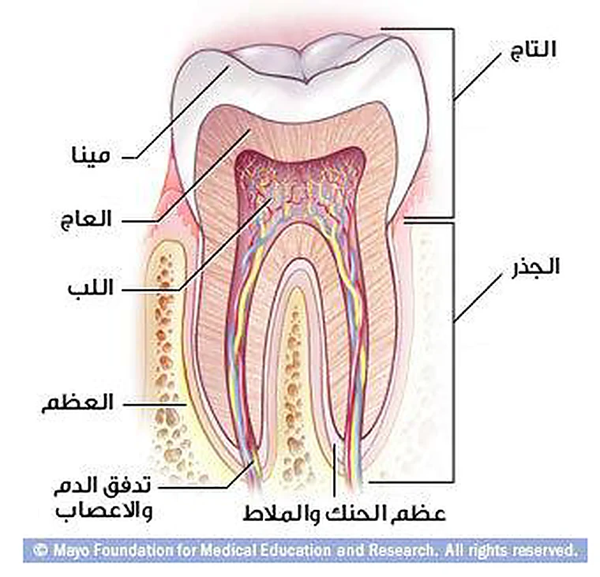
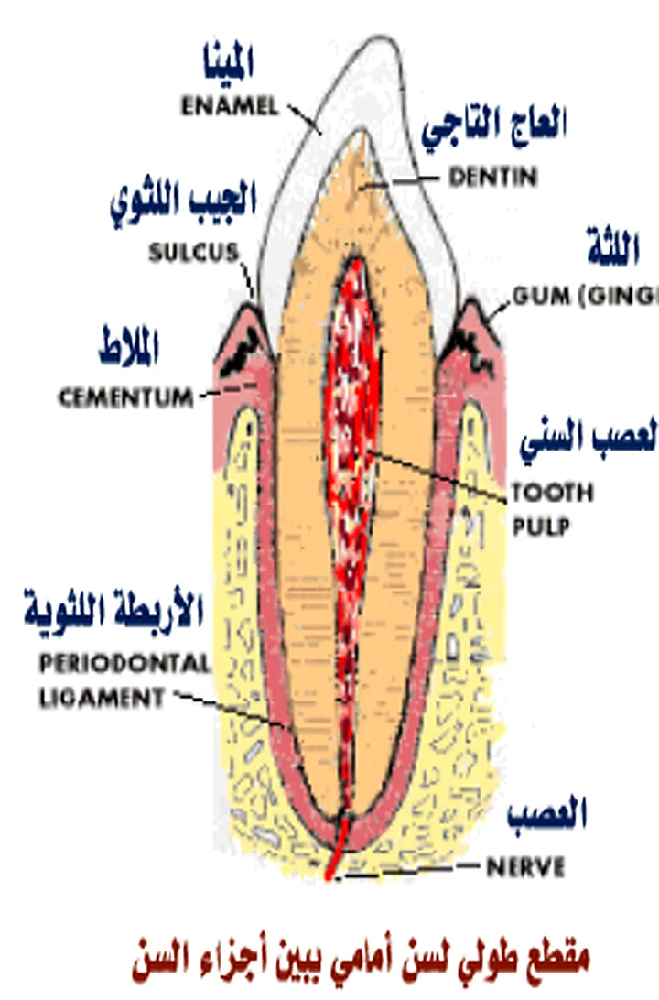

تتألف السن من أنسجة مختلفة تؤدي معاً وظيفة الحماية والدعم والحس. تغطي الميناء التاج، ويشكّل العاج القسم الأكبر من السن،
بينما يغطي الملاط الجذر، ويشكّل اللب النسيج الحي المركزي الحساس داخل السن.
أقسى نسيجالميناء هي الأشد صلابة بين أنسجة الجسم.
الكتلة الرئيسيةالعاج هو الكتلة المركزية للسن ومصدر قوتها.
طبقة خارجية تغطي التاج وتحميه من المؤثرات الميكانيكية والحرارية والكيميائية.
2
العاج
يشكل أساس السن والكتلة المركزية لها، وهو أقل صلابة من الميناء وأكثر صلابة من العظم.
3
الملاط
يغلف الجذر فقط، ويشبه في تركيبه إلى حد بعيد تركيب العظم.
4
اللب
النسيج الحي داخل السن، مكوّن من ألياف عصبية وأوعية شريانية ووريدية.
1 — الطبقة الخارجية للتاج
الميناء
E
الميناء هي الطبقة الخارجية المغطية للسن، وتشكل غطاءً متيناً يقاوم المؤثرات الخارجية الميكانيكية والحرارية والكيميائية.
يختلف سمكها بحسب المناطق المختلفة للسن وحسب نوع الأسنان، ويتراوح تقريباً بين 0.01 مم عند الأعناق و2 مم عند ذرى الحدبات، ولا تزيد في ميزاب الأرحاء على 0.5 مم تقريبًا.
يتدرج لون الميناء بين الأبيض المصفر والأبيض الرمادي، ويُعزى اختلاف اللون إلى شفافية الميناء ودرجة تجانسها.
اللون والشفافية
الأسنان المصفرة تملك ميناء رقيقة نسبياً يشف من خلالها لون العاج الأصفر، بينما تظهر الأسنان الرمادية أكثر عتامـة.
مناطق خاصة
تبدو منطقة العنق أكثر اصفراراً، بينما تميل الأقسام القاطعة إلى الأزرق قليلاً بسبب رقة الحد القاطع.
الصلابة
تُعد من أقسى أنسجة الجسم، وتُقارن صلابتها بصلابة الكوارتز وفق الوصف المذكور في المصدر.
97%أملاح الكالسيوم
تضم فوسفات الكالسيوم (هيدروكسي أباتيت) وفوسفات الكالسيوم وفلورور الكالسيوم.
3%ماء ومواد عضوية
تمثل النسبة الصغيرة غير المعدنية من بنية الميناء.
i
التركيب البنيوي
تتكون طبقة الميناء نسيجياً من المؤاشير المينائية والمادة اللاصقة بينها، حيث تتخذ المؤاشير اتجاهات شعاعية وتتجاوز سماكة الميناء.
2 — الكتلة الأساسية للسن
العاج
D
العاج يشكل أساس السن ومصدر قوتها، ويمثل الكتلة المركزية لأنسجة السن الصلبة.
لونه الطبيعي عند الشباب بين الأبيض والأصفر الفاتح، ويزداد اصفراراً مع التقدم في العمر. وقد يتلون بألوان مختلفة عند تماسّه مع سوائل الفم أو الأدوية الموضعية أو مواد الحشو.
العاج أقل صلابة من الميناء وأكثر صلابة من العظم.

الصورة الأصلية المقتطعة من المصدرتوضح تموضع العاج بالنسبة إلى الميناء واللب وعظم الفك.
التركيب الكيميائي
70% مواد معدنية.
أهمها فوسفات الكالسيوم وكربونات الكالسيوم وكربونات المغنزيوم.
17% مواد عضوية.
13% ماء.
التركيب النسجي
يتألف العاج من أنابيب عاجية صغيرة تمتد من المركز نحو المحيط، وتحتوي أليافاً شبه عصبية تنقل الإحساسات الألمية إلى اللب السني، وتسمى ألياف توماز.
السن ضمن النسج الداعمةيوضح أن الملاط يغلف الجذر ويتصل بالميناء عند العنق بطرائق مختلفة.
الملاط يغلف الجذور فقط وينتهي عند العنق، ويلتقي مع الميناء في هذه المنطقة.
قد يكون التقاء الميناء بالملاط بإحدى ثلاث حالات:
أن يغطي الملاط الميناء بمسافة قصيرة، أو أن تغطي الميناء الملاط، أو أن يكون بينهما فراغ بسيط ينكشف فيه العاج.
يكشف هذا سبب الألم عند محاولة حكّ السن بأداة عند منطقة العنق.
علاقة بالميناء والعاج:إذا نشأ فراغ بسيط بين الميناء والملاط ينكشف العاج في المنطقة العنقية، فتزداد الحساسية.
يشبه تركيب الملاط إلى حد بعيد تركيب العظم بحسب النص المرفق.
4 — النسيج الحي المركزي
اللب
P

مقطع أمامي لأجزاء السنيوضح تموضع اللب السني بالنسبة إلى العاج والعصب وبقية البنى.
اللب هو النسيج الحي داخل السن، ويتألف من ألياف عصبية وأوعية شريانية ووريدية.
وظيفة اللب إعطاء الحساسية للسن، كما يتشكل فيه نوعان من العاج:
العاج الثانوي
يتشكل بشكل طبيعي مع الزمن على جدران اللب، مؤدياً إلى زيادة سماكة العاج.
العاج الثالثي أو العاج المرمم
يتشكل كرد فعل دفاعي تجاه العوامل المؤذية الخارجية مثل نخر السن أو التهيج الحراري، فيدفع اللب إلى التراجع مبتعداً عن الخطر.